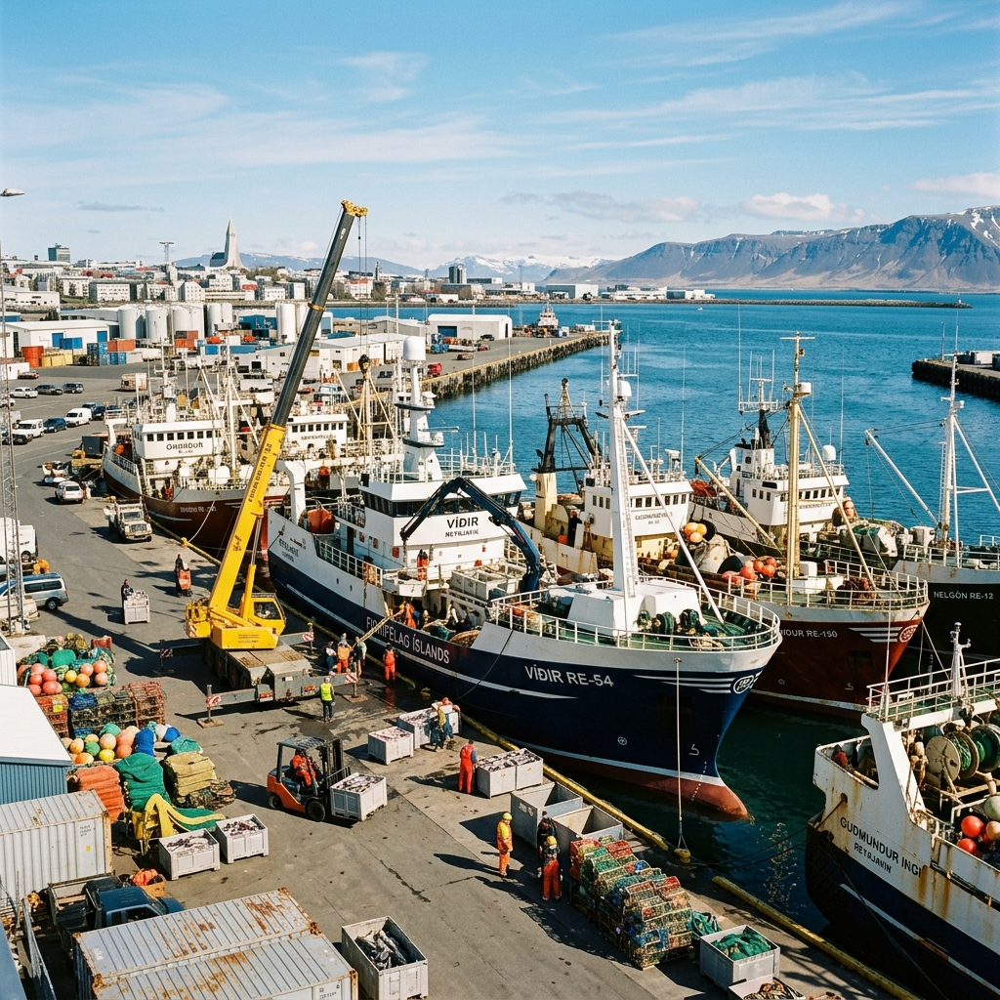

GVIFishery Technology
Department of fisheries and fishermen's welfares
GVIFishery Technology
Department of fisheries and fishermen's welfaresGVI Fishery, Bhubaneswar, Odisha plays an important role in the development of inland, marine, and aquaculture fisheries across the state. Odisha possesses a long coastline, rich aquatic biodiversity, numerous rivers, reservoirs, wetlands, and fish farming resources which contribute significantly to fisheries production and livelihood generation.
The organization focuses on sustainable fisheries management, scientific aquaculture systems, fish seed production, hatchery development, marine fisheries, and socio-economic welfare of fishermen communities throughout Odisha.

GVI Fishery promotes modern fisheries infrastructure including fish hatcheries, fish landing centers, fish transportation, cold storage facilities, and scientific fish farming systems.
The organization continuously works towards improving fish production, strengthening marine and inland fisheries, and supporting fishermen through training and awareness programs.
Odisha has several important coastal and inland fisheries regions contributing to aquaculture, marine fisheries, reservoir fisheries, and fish farming development.
| Fisheries Sector | Development Area | Priority Level |
|---|---|---|
| Marine Fisheries | Coastal Districts of Odisha | High |
| Inland Fisheries | Rivers, Lakes & Reservoirs | High |
| Aquaculture | Fish Farms & Hatcheries | Advanced |
| Ornamental Fisheries | Aquarium & Breeding Centers | Growing |
| Overall Fisheries Growth | Expanding | |